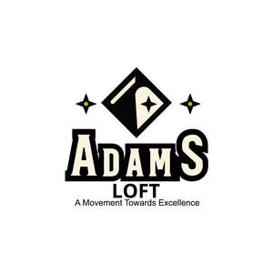

Trade Mark Journal No.2025/013 28 March 2025
UK00004173389 13 March 2025 (9,20)

- Class 9
- Digital picture frames; Digital photo frames.
- Class 20
- Picture frames; Frames (Picture -); Picture and photograph frames; Mouldings for picture frames; Photo frames; Moldings for picture frames; Frames for pictures; Paper picture frames; Frames (Picture -) of metal; Picture rods [frames]; Carved picture frames; Picture frame mouldings; Photograph frames; Leather picture frames; Picture holders [frames]; Picture frame moldings; Picture frame brackets; Brackets (Picture frame -); Frames; Frames for photographs; Moldings [mouldings] for picture frames; Picture frames (Moldings [mouldings] for -); Picture frames of precious metal; Mouldings made of wood for picture frames; Photograph frames of wood; Mouldings made of plastics for picture frames; Mirror frames; Photograph frames of metal; Frames (Picture -) of non-metallic materials; Picture frames [not of precious metal]; Display frames; Wooden picture mouldings; Mounts [frames] for photographs; Mouldings made of substitutes of wood for picture frames; Frames for mirrors; Holders for photographs [frames]; Embroidery frames; Frames (Embroidery -); Frames for display boards; Furniture frames; Frames for signboards; Frameless picture holders; Non-metal picture hangers; Display frames of metal [furniture]; Frames for bed canopies.
Adams Loft Ltd